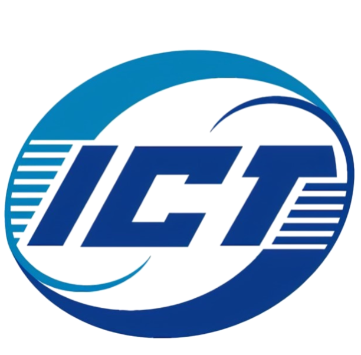
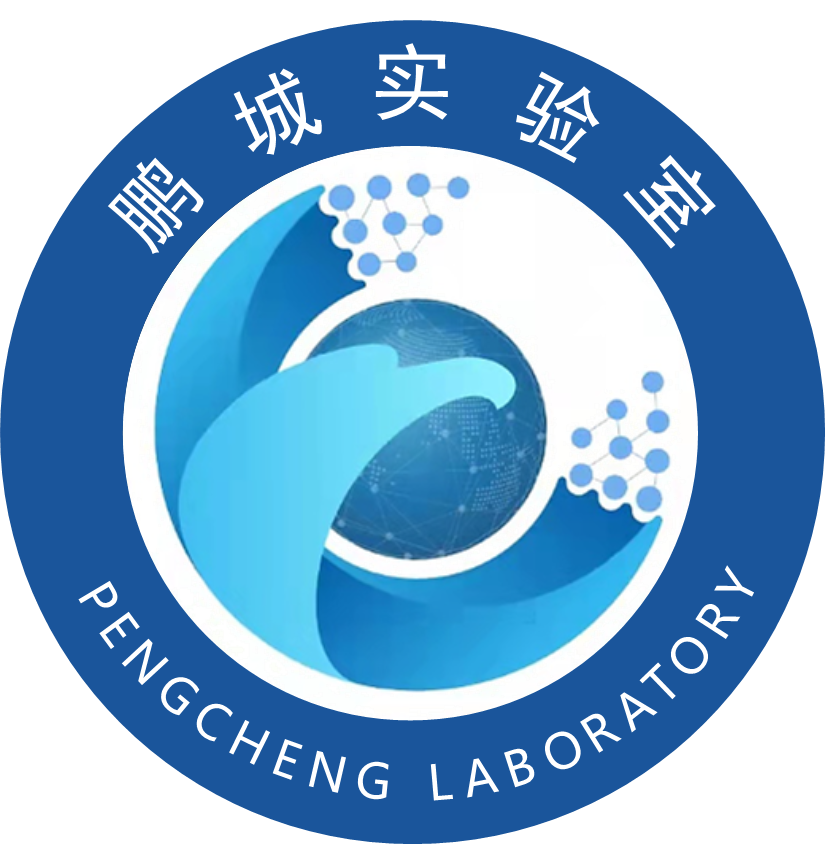

Jiahao Li
lijiahao@ict.ac.cn
I am an Assistant Professor at the Institute of Computing Technology, Chinese Academy of Sciences (ICT, CAS). I earned my B.S. in Computational Mathematics from Shandong University in 2020 and my Ph.D. in Computer Science from ICT, CAS in 2025, under the supervision of Yiqiang Chen✉. My research interests include:
Application: AI Safety, Anomaly Detection, Open-World AI, Robust Perception, Federated Learning
Direction: Memory Mechanisms, Unlearnable Data, Quantum Machine Learning, Multi-agent collaboration
Vision: Build adaptive and trustworthy AI systems beyond closed-world assumptions
Open to research collaborations and student inquiries. If you are interested in machine learning, computer vision, representation learning, or related areas, please email me.
Education
| UNIVERSITY | DEPARTMENT | MAJOR | DEGREE | TIME | ||
 |
University of Chinese Academy of Sciences |  |
Institute of Computing Technology, Chinese Academy of Sciences |
Computer Science | Ph.D. | Sep/2020-Dec/2025 |
 |
Shandong University |  |
Mathematics | Computational Mathematics | B.S. | Sep/2016-Jun/2020 |
Experience
| ORGANIZATION | CERTIFICATION | DEPARTMENT | POSITION | DUTY | TIME | |
|  |
Pengcheng National Laboratory | No.222030018 | Institute of Perceptual Intelligence, Network Intelligence Department |
Research Assistant | Anomaly Perception, Network Intelligence, Computer Vision | Sep/2022-Dec/2025 |
 |
PRORICH Capital Group | - | Investment Department | Assistant to Chairman | Private equity, Mergers & Acquisitions, Due Diligence, Fundraising | Oct/2019-Sep/2020 |
 |
Alibaba Cloud Computing Co. Ltd. | No.228854 | Intelligent Products Business Group, Cloud Product R&D |
Algorithm Engineer | Intelligent Scheduling, Anomaly Detection, Content Delivery Networks | May/2019-Oct/2019 |
 |
Deloitte Touche Tohmatsu Certified Public Accountants LLP |
No.140815 | Audit and Assurance Department | Auditor | Audit working paper of the annual audit report of Antonoil (03337.HK). Income Replacement Testing, Handling confirmation with Deloitte Global Delivery Center, Minutes of Meeting at Dubai Headquarters |
Jan/2018-Mar/2018 |
Selected Awards
| Outstanding Graduate of Beijing Municipal Institutions of Higher Education | 5.00% | 2026 |
| Outstanding Graduate of University of Chinese Academy of Sciences | 5.00% | 2026 |
| National Scholarship | 0.20% | 2025 |
| Merit Student in University of Chinese Academy of Sciences | 8.13% | 2024 |
| Merit Student in University of Chinese Academy of Sciences | 8.97% | 2023 |
| Outstanding Student of Shandong University | 0.27% | 2018 |
| Deloitte China Innovation Elite Top 40 | 0.02% | 2017 |
Selected Papers
- Wavelet Domain Steganography for Robust Unlearnable DataPattern Recognition · 2026
- GSM: Global Semantic MemoryPattern Recognition · 2026
- K-Space Bispectrum Steganography for Robust Unlearnable DataACM MM · 2025
- Memory Mechanism for Unsupervised Anomaly DetectionUAI · 2023
Academic Service
- Editorial boards
- CJMSR DLPR JAET
- Program committee
- MMM
- Peer review
- AAAI , NeurIPS , ICASSP , , IJCNN , , ACML , , ICME , AVSS WASPAA DMBD DIST SIGKDD CIKM PR Next Res. Opt. Laser Technol. Abdom. Radiol. TSUSC